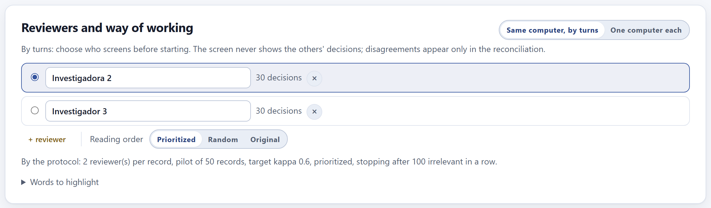
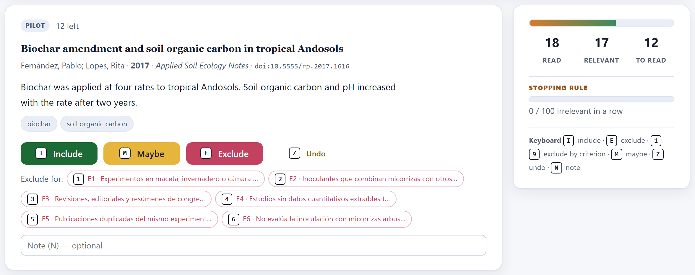
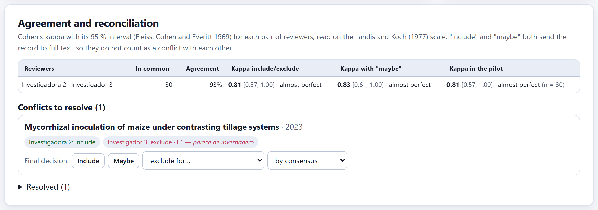
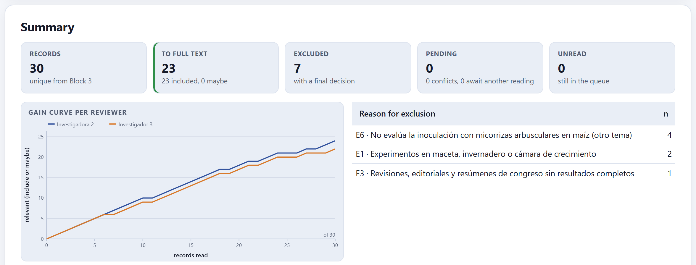

Each record is decided with one key. The order learns from your decisions so that relevant records come first; the stopping rule and its verification are documented; with two reviewers, each one reads blind, agreement is measured with kappa and disagreements are reconciled at the end. Everything that someone marked “include” or “maybe” goes on to full text.

Reviewers are created automatically from the protocol authors with the “Screening” role; + reviewer adds another one and the ✕ removes a reviewer together with all of their decisions. The radio button marks the active reviewer: the one screening now.
| Same computer, by turns | Each person chooses their name before starting. The screen never shows the others’ decisions; disagreements appear only in the reconciliation. |
| One computer each | Everybody imports the same files in Block 3 (or opens the same project), each reviewer screens on their own computer and exports their decisions; one person imports them all to reconcile (Section 4.4). |
| Reading order | Prioritized (the model moves up what resembles the included records), Random or Original (the import order). |
| Words to highlight | The terms of the search strategy are highlighted automatically in the title, abstract and keywords. Here you add two comma-separated lists: include (for example, field) and exclude (greenhouse, pot), which are marked in another color. They speed up reading without deciding anything. |

Each record shows its title, authors, year, journal, DOI, abstract and keywords. You decide with the buttons or the keyboard:
| Key | What it does |
|---|---|
| I | Include: goes on to full text. |
| M or ? | Maybe: also goes on to full text; use it when the abstract is not enough to decide. |
| E | Exclude without a reason. |
| 1 to 9 | Exclude for the exclusion criterion with that number (E1, E2…), which is recorded as the reason. |
| Z or ⌫ | Undo the last decision. |
| N | Write a note for this record. |
The label at the top tells you which phase you are in: pilot until the number of pilot records set in the protocol is reached, a phase in which it is wise to measure agreement before going on. A record without an abstract warns you: “No abstract: decide by the title or mark it "maybe".”
| If the record clearly meets the question | then include. |
| If the abstract does not let you know whether it meets it (it does not state the design, the site or the variable) | then maybe: the full text will settle it. At title and abstract, when in doubt, do not exclude. |
| If it clearly fails a criterion | then exclude with that criterion’s key. |
| If no exclusion criterion describes why it does not belong | then your protocol needs one more criterion: add it as an amendment (the example added E6, “another topic”). |
With the prioritized order, the model of the home-page lab (Section 1.4) learns from each decision and reorders what is left. The side panel counts the records read, the relevant ones (include or maybe) and those still to read, and carries the stopping rule declared in the protocol: the bar advances with the irrelevant records in a row (“0 / 100 irrelevant in a row”) or shows the knee slope ratio ρ.
When the rule is met, the app does not stop on its own. It says “The rule is met. Before stopping, verify with a random sample of the unread: if a relevant one appears, screening goes on.” and proposes a sample size (10% of the unread records, between 50 and 300). When you choose the size, it explains what it guarantees:
If no relevant record appears in a random sample of n unread records, the proportion of relevant records left among the unread is, with 95% confidence, below the exact Clopper–Pearson upper limit for 0 of n. The app translates this into records: “If no relevant record appears among n, with 95 % confidence at most k relevant remain among the N unread.” A larger sample narrows the limit. If a relevant record appears during the verification, screening resumes.
When the verification ends without relevant records, the app says “The sample found no relevant record: screening is stopped and documented.”; the unread records are counted as such in the PRISMA diagram of Block 5, with the rule and the verification that back them. Resume screening undoes the stop if you decide to go on.
The example has only 30 records, and 23 of them are relevant: with such a high prevalence, prioritization saves nothing and the stopping rule is never met. This is normal in a small, very precise search. Prioritization pays off in searches of thousands of records with 1 to 5% relevant ones, like those of the home-page lab.
In the One computer each mode, the Exchange decisions panel has two buttons. ⤓ Export my decisions saves those of the active reviewer in a small file; whoever reconciles receives them and uses Import another reviewer's decisions…. If the reviewer did not exist, they are created with their name. You can also import another reviewer’s complete project file: the app takes only their decisions from it.
Decisions are tied to each record by its DOI or, without a DOI, by its title and year. For the decisions from two computers to match, both reviewers must have imported the same files in Block 3—the safest way is for one of them to import, save the project and for the other to open that copy.

For each pair of reviewers, the table gives how many records they read in common, the percentage of agreement and three Cohen’s kappas with their 95% interval (Fleiss, Cohen and Everitt 1969): include versus exclude, the three categories with “maybe,” and the pilot. Each kappa is read on the Landis and Koch (1977) scale. With three or more reviewers, Fleiss’ kappa for all of them is added.
| Kappa | Agreement | What to do |
|---|---|---|
| ≤ 0 | poor | Stop: discuss the pilot disagreements, refine the wording of the criteria and repeat the pilot. |
| 0.01–0.20 | slight | |
| 0.21–0.40 | fair | |
| 0.41–0.60 | moderate | Review the criteria that divide you most before going on. |
| 0.61–0.80 | substantial | Go on; reconcile the disagreements at the end. |
| 0.81–1.00 | almost perfect |
If the pilot kappa falls below the protocol target, the app warns you: “The pilot kappa (…) is below the protocol target (…). Discuss the pilot disagreements and sharpen the criteria before going on.” Since “include” and “maybe” both send the record to full text, they do not count as a conflict with each other.
Each conflict to resolve shows what each reviewer decided, with their reason and note. The final decision is made with Include, Maybe or exclude for… a criterion, and who made it is recorded: by consensus or by one of the reviewers (the third one, if the protocol provides for it). Resolved conflicts go to Resolved, where they can be reopened.
The reviewers disagreed on 2 of 30 records (93% agreement, kappa = 0.81, almost perfect). In a tillage study, one included it and the other excluded it for E1 because it “looks like a greenhouse study”; on rereading the abstract, it was a field study: it was included by consensus. In a microbial diversity study, one marked it “maybe” and the other excluded it for E6: it was excluded for E6.

The five figures at the top count the records, those going on to full text, those excluded with a final decision, the pending ones (conflicts and records awaiting another reviewer’s reading) and the unread ones. The gain curve per reviewer shows how many relevant records each person found as they went along; the table shows the reasons for exclusion, which Block 5 will carry to the PRISMA diagram.
My decisions lists those of the active reviewer, filterable by included, maybe and excluded, and each one can be changed from its menu. Two downloads: ⤓ Records to full text (.ris), to find and file them in your reference manager, and ⤓ All decisions (.csv), with each reviewer’s decision, reason and note and the final one: the audit trail a peer reviewer may ask for.
“There are no records. Import and deduplicate them in Block 3.”; “No exclusion criteria in the protocol (Block 2): exclusions will carry no reason.”; “With a single reviewer there is no agreement to measure.”; the pilot kappa below the target; the stopping rule met; and “Done! You read every record.”